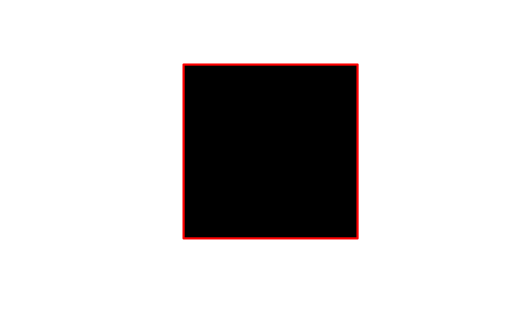
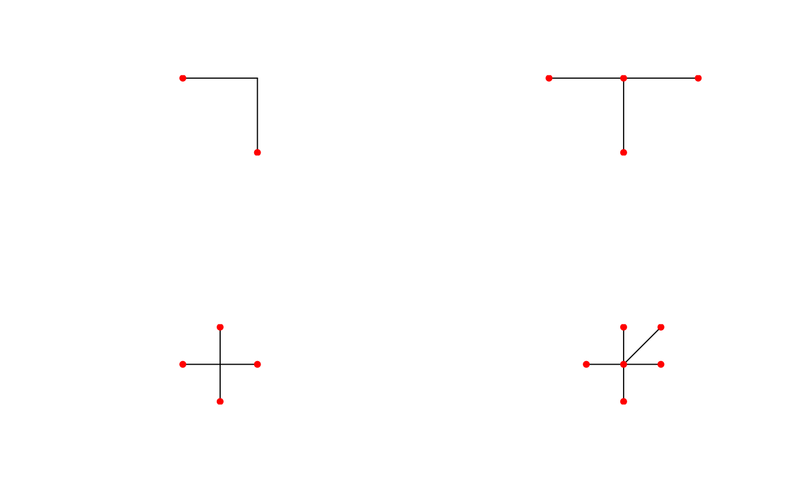

topo-unary-gBoundary.RdFunction for determinging the Boundary of the given geometry as defined by SFS Section 2.1.13.1
gBoundary(spgeom, byid=FALSE, id = NULL)
| spgeom | sp object as defined in package sp |
|---|---|
| byid | Logical determining if the function should be applied across subgeometries (TRUE) or the entire object (FALSE) |
| id | Character vector defining id labels for the resulting geometries, if unspecified returned geometries will be labeled based on their parent geometries' labels. |
Depending of the class of the spgeom the returned results will differ.
Based on the documentation of JTS (on which GEOS is based) the following outputs are expected:
| Point | empty GeometryCollection |
| MultiPoint | empty GeometryCollection |
| LineString | if closed: empty MultiPoint if not closed: MultiPoint containing the two endpoints. |
| MultiLineString | MultiPoint obtained by applying the Mod-2 rule to the boundaries of the element LineStrings |
| LinearRing | empty MultiPoint |
| Polygon | MultiLineString containing the LinearRings of the shell and holes, in that order (SFS 2.1.10) |
| MultiPolygon | MultiLineString containing the LinearRings for the boundaries of the element polygons, in the same order as they occur in the MultiPolygon (SFS 2.1.12/JTS) |
| GeometryCollection | The boundary of an arbitrary collection of geometries whose interiors are disjoint consist of geometries drawn from the boundaries of the element geometries by application of the Mod-2 rule (SFS Section 2.1.13.1) |
The mod-2 rule states that for a multiline a point is on the boundary if and only if it on the boundary of an odd number of subgeometries of the multiline (See example below).
# mod-2 rule example x1 = readWKT("MULTILINESTRING((2 2,2 0),(2 2,0 2))") x2 = readWKT("MULTILINESTRING((2 2,2 0),(2 2,0 2),(2 2,4 2))") x3 = readWKT("MULTILINESTRING((2 2,2 0),(2 2,0 2),(2 2,4 2),(2 2,2 4))") x4 = readWKT("MULTILINESTRING((2 2,2 0),(2 2,0 2),(2 2,4 2),(2 2,2 4),(2 2,4 4))") b1 = gBoundary(x1) b2 = gBoundary(x2) b3 = gBoundary(x3) b4 = gBoundary(x4) par(mfrow=c(2,2)) plot(x1); plot(b1,pch=16,col='red',add=TRUE) plot(x2); plot(b2,pch=16,col='red',add=TRUE) plot(x3); plot(b3,pch=16,col='red',add=TRUE) plot(x4); plot(b4,pch=16,col='red',add=TRUE)